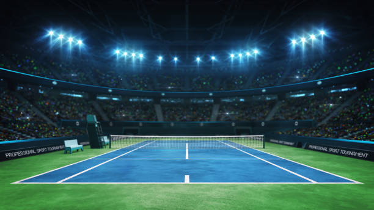
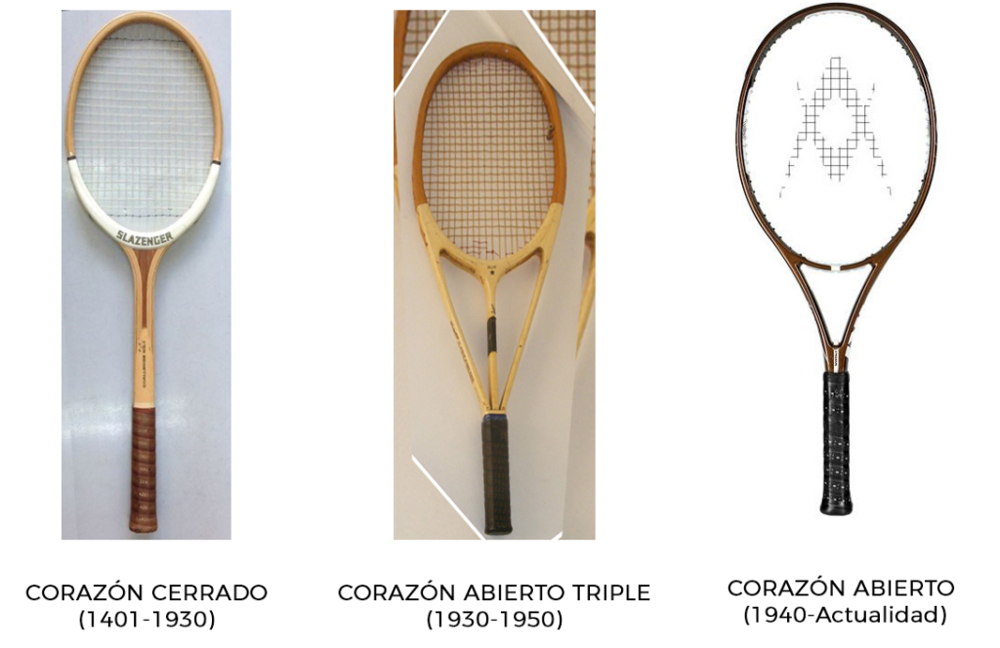
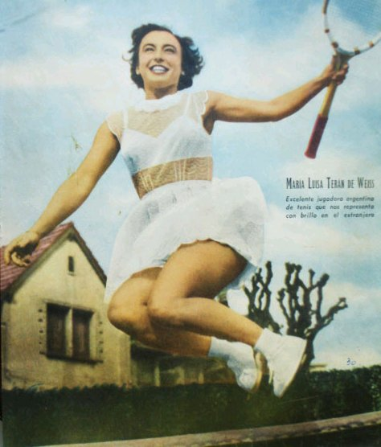

TENIS

Historia del tenis
Las primeras referencias del tenis tienen lugar en Francia, nombrado le Paume (juego de palmas), dado que al principio se golpeaba la pelota con la mano. Más tarde se empezaron a utilizar raquetas.
El tenis original se jugaba en pistas de hierba natural. Se originó en Europa a finales del siglo xviii y se expandió en un principio por los países angloparlantes, especialmente entre sus clases altas.
En la actualidad el tenis se ha globalizado y es practicado principalmente en Occidente. Desde 1926, con la creación del primer tour, es un deporte profesional. Es además un deporte olímpico desde los Juegos Olímpicos de Atenas 1896.


Primera seleccion del tenis masculino en la Argentina
A nivel de representación nacional, Argentina ha ganado cinco medallas olímpicas (dos de plata y tres de bronce). La selección masculina ha ganado la Copa Davis 2016 y ha sido cuatro veces subcampeona del certamen.
Seleccion actual Argentina
El equipo masculino del país cuenta con cuatro títulos de la Copa Mundial por Equipos (1980, 2002, 2007 y 2010) y tres subcampeonatos (1989, 2005 y 2011). El equipo juvenil masculino fue campeón de la Copa ITF Sunshine en 1985 y 1994 y campeón de la Copa Billie Jean King Junior en 1999 y 2004 y Copa Mundial sub-14 en 1996 y 2016.
Informacion de la cancha y posiciones
El tenis se juega en una superficie rectangular y lisa, que puede estar construida en diversos materiales. La cancha tiene 23,77 m (metros) de longitud. La anchura varía según se juegue individuales (8,23 m) o dobles (10,97 m).
Informacion de las faltas y reglas
Faltas
Servicio. El juego comienza con un saque.
Golpear la pelota.
La bola no debe tocar el suelo.
La pelota no puede tocar el techo o las paredes.
No debe tocarse la red con la raqueta.
Gana el equipo que gane 6 sets.
Los jugadores cambian de lado.
Obtener informacion reglas
Historia del balon antigua y raqueta mundialistas
Balon
se jugaba tenis con una bolsa de té rellena de pelos de campesinos. Luego, se creó la pelota de caucho y todo se volvió más fácil. Se usaban pelotas blancas y negras, pero fue en 1972 cuando la ITF las cambió por las amarillas.
Obtener informacion balones
Raqueta

Primera seleccion del tenis femenino en Argentina
La primera tenista destacada internacionalmente fue Mary Terán de Weiss, quien en las décadas de 1940 y 1950 llegó a estar entre las 20 principales del mundo. La selección femenina ha sido dos veces semifinalista de la Copa Billie Jean King.

Seleccion actual Argentina
En los últimos años, Argentina ha sido protagonista de las grandes ligas de clubes del extranjero, gracias a la participación en ellas de un número importante de jugadoras nacionales. En la actualidad casi cincuenta argentinas se desempeñan con éxito en Europa.

Obtener informacion de la Seleccion Argentina
Volver al Inicio